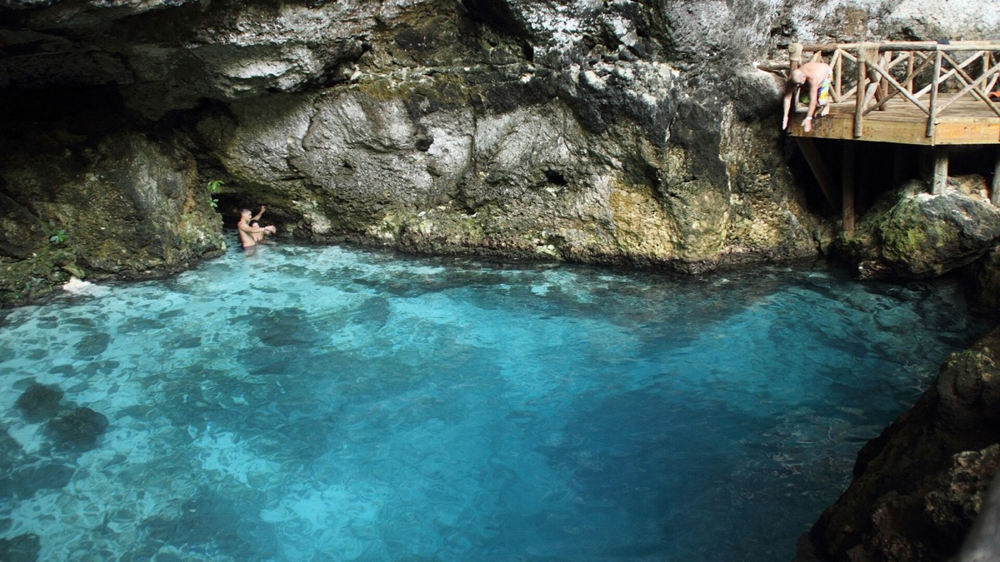

Nature escape
Ojos Indígenas Ecological Reserve: a Punta Cana guide

Ojos Indígenas Ecological Reserve is a refreshing change of pace from a traditional beach day. The reserve is known for forest trails and clear freshwater lagoons, offering a quieter side of the Punta Cana area and a memorable nature-focused outing.
What makes it worth the visit
The experience is about slowing down: walking through a natural setting, seeing the lagoons, and taking in a different landscape from the coast. It works especially well as a half-day plan for travelers who would like to mix beach time with something green and calm.
How to plan a comfortable visit
- Wear comfortable walking shoes and bring water, sun protection, and insect repellent.
- Bring swimwear only if current rules permit swimming at the lagoons you plan to visit.
- Allow extra time for transportation, arrival procedures, and enjoying the trails at an unhurried pace.
- Respect the trails, the water, and any on-site conservation guidance so this special place stays special.
Visit from either of our homes
Ojos Indígenas is a rewarding day out from either Orsini Stays home. Punta Cana Village Dreamcatcher is the closer of our two properties, making it the best fit if a visit to the reserve is a priority. Its two-bedroom layout, pool view, workspace, and nearby everyday conveniences also make returning from a day out easy.
Cap Cana Happy Place is another comfortable option for guests whose trip is centered around Cap Cana’s beaches, marina, golf, and outdoor attractions. It adds a pool, gym, elevator access, and private balcony to the itinerary.
Stay closer to Ojos Indígenas
See Dreamcatcher’s photos, amenities, and current availability.